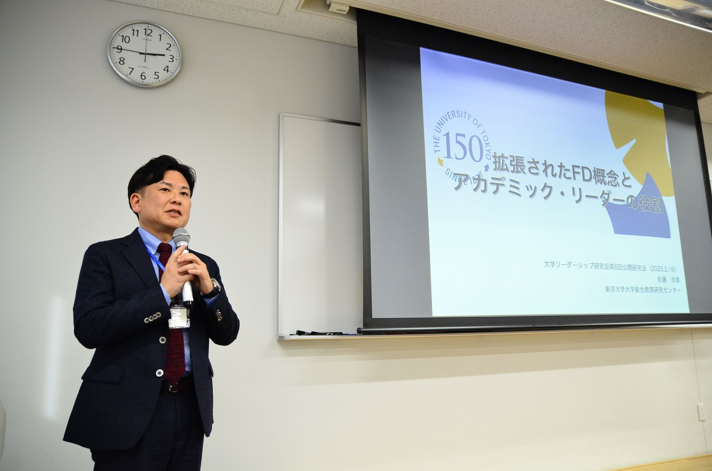
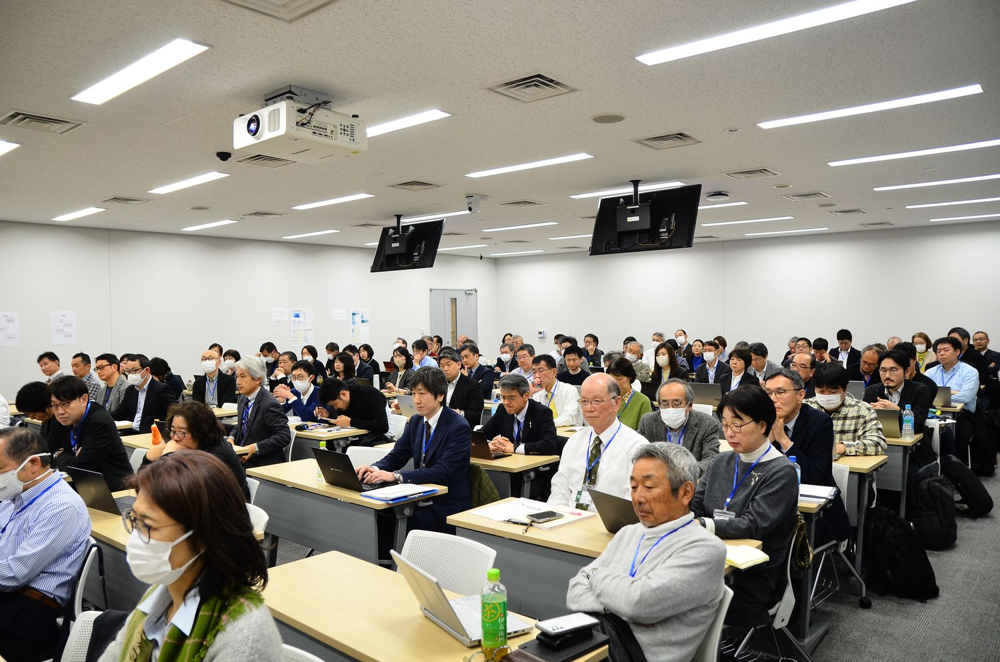
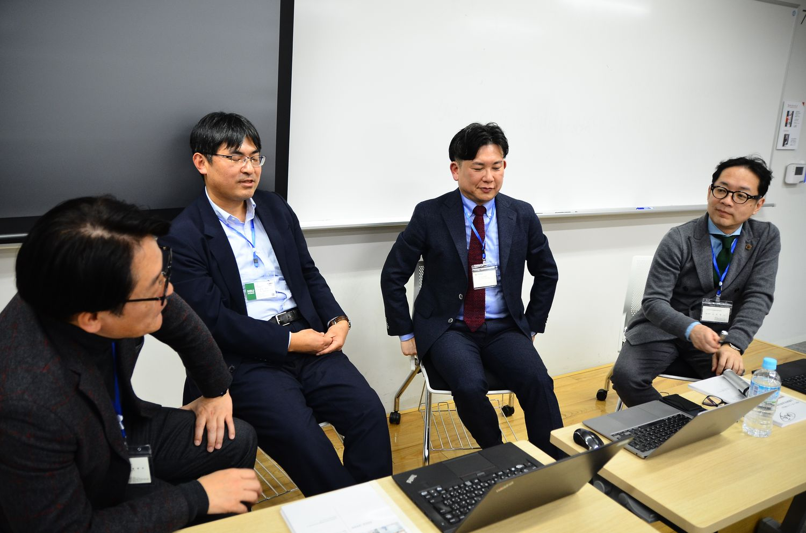

本研究会が2022年度から3年間にわたり科研費の支援を受けて実施してきた研究プロジェクトの総括として開催しました。全国の学部長・学長を対象とした調査の報告、ミドル育成の実践事例、そしてFD概念の拡張とアカデミック・リーダーの役割に関する基調講演を通じて、多角的な議論を行いました。



| 日時 | 2025年2月16日（日） |
|---|---|
| 会場 | 共立女子大学 神田一橋キャンパス 2号館702教室 |
| 主催 | 大学リーダーシップ研究会 |
| 参加者 | 110名（一般参加99名／主催・事務局7名／登壇者4名） |
参加者数は、研究会が保有する第1〜9回の統合参加者データ（v13）にもとづく集計です。申込記録を基礎としているため、当日の実数とは若干の差がありえます。
2024年11月から12月にかけて全国約800大学に質問票を郵送し、学部長160票、学長83票を回収しました。学部長の業務認識は「教育成果改善業務」「教員マネジメント業務」「教マネ業務」の3因子に整理されました。教マネの促進要因としては学長指名であること、豊富な管理職経験、教育改善業務の重視が挙げられ、学長は学部長に対して執行部への提案や情報共有をより期待していることが明らかになりました。
佐藤浩章教授は、2022年の大学設置基準改正でFD・SDの規定が「教員及び事務職員等」に変更されたことに着目し、大学管理職（アカデミック・リーダー）が教職員全体の包括的な能力開発の実施責任を負うことになったと解釈しました。大学教員は「賢い人々（Clever People）」として、自律性の重視、権威への懐疑心、内発的動機による行動といった特徴を持ち、同じ専門分野の同僚からの評価や学術的威信がモチベーションになるという指摘は、教員マネジメントを考えるうえで重要な視点でした。
また、学問領域によって教員の振る舞いが大きく異なることを「学問部族と領域」の概念を援用して説明し、過去の研究会で登壇した学長たちの学問的背景がマネジメントスタイルに反映されていることを示しました。
専門性と教学マネジメントの関係、日本固有の課題と大学観の転換、非営利組織のマネジメントとビジョンの重要性が議論されました。橋本博（日本文理大学）、杉本義行（成城大学）、森正美（京都文教大学）、岩野英知（酪農学園大学）、佐藤雄一（共立女子大学）の各学長からコメントをいただきました。
専門性とジェネリック・スキルの関係、FD概念の拡張という理論的な論点への反応が多く見られました。研究会の継続を望む声が最も多く現れた回でもあります。
| 研究会全体の満足度 | 4.65 |
|---|---|
| 報告 山本 啓一・石川 勝彦 | 4.47 |
| 基調講演 佐藤 浩章 | 4.68 |
| パネルディスカッション | 4.46 |
| フロア討議 | 4.25 |
| 仕事との関連性・有用性 | 4.59 |
参加者アンケートの回答は37件（回答率33.6%）です。満足度は5段階で、数値が大きいほど高い評価を示します。
本研究会はJSPS科研費 基盤研究(C)「教学マネジメントにおける学部長等のミドルリーダーシップ研究」（研究代表者：山本啓一）の助成を受けて開催しました。